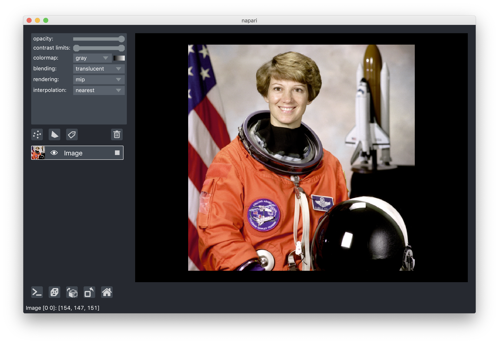

napari¶
Multi-dimensional image viewer for python¶


napari is a fast, interactive, multi-dimensional image viewer for Python.
It’s designed for browsing, annotating, and analyzing large multi-dimensional
images. It’s built on top of Qt (for the GUI), vispy (for performant
GPU-based rendering), and the scientific Python stack (numpy, scipy). It
includes critical viewer features out-of-the-box, such as support for large
multi-dimensional data, and layering and annotation. By integrating closely with
the Python ecosystem, napari can be easily coupled to leading machine
learning and image analysis tools (e.g. scikit-image, scikit-learn,
TensorFlow, PyTorch), enabling more user-friendly automated analysis.
We’re developing napari in the open! But the project is in an alpha stage, and there will still likely be breaking changes with each release. You can follow progress on our GitHub repository, test out new versions as we release them, and contribute ideas and code.
Installation¶
Which distribution to install¶
If you want to contribute back to the napari codebase, you should install from source code: see the from source section.
If you only wish to use napari as GUI app (and not from python code), the bundled app is the easiest way to install, it does not require having python pre-installed.
If you are using napari from Python to programmatically interact with the app, you can install via pip, conda-forge, or from source.
From pip, with “batteries included”¶
napari can be installed on most macOS, Linux, and Windows systems with Python 3.8-3.10 using pip:
pip install "napari[all]"
(See Specifying a GUI Backend below for an explanation of the [all] notation.)
From conda¶
conda install -c conda-forge napari
Current development branch from github¶
To install the current main branch on github (which will usually be ahead
of the latest release on pypi)
pip install "git+https://github.com/napari/napari.git#egg=napari[all]"
For more information or troubleshooting see our installation tutorial
Specifying a GUI Backend
napari needs a library called Qt to run its user interface
(UI). In Python, there are two alternative libraries to run this, called
PyQt5 and
PySide2. By default, we don’t choose for you,
and simply running pip install napari will not install either. You might
already have one of them installed in your environment, thanks to other
scientific packages such as Spyder or matplotlib. If neither is available,
running napari will result in an error message asking you to install one of
them.
Running pip install "napari[all]" will install the default framework – currently
PyQt5, but this could change in the future.
To install napari with a specific framework, you can use:
pip install "napari[pyqt5]" # for PyQt5
# OR
pip install "napari[pyside2]" # for PySide2
Getting started¶
If you are new to napari, check out our getting started guide.
Example¶
(The example below requires the scikit-image package to run. We just use data
samples from this package for demonstration purposes. If you change the example
to use your own dataset, you may not need to install this package.)
From inside an IPython shell or jupyter notebook you can open up an interactive viewer by calling:
from skimage import data
import napari
viewer = napari.view_image(data.astronaut(), rgb=True)

To do the same thing inside a script call (note the call to napari.run() at
the end)
from skimage import data
import napari
viewer = napari.view_image(data.astronaut(), rgb=True)
napari.run() # start the event loop and show viewer
Features¶
Check out the scripts in our examples folder to see some of the functionality
we’re developing!
napari supports six main different layer types, Image, Labels, Points,
Vectors, Shapes, and Surface, each corresponding to a different data type,
visualization, and interactivity. You can add multiple layers of different types
into the viewer and then start working with them, adjusting their properties.
All our layer types support n-dimensional data and the viewer provides the ability to quickly browse and visualize either 2D or 3D slices of the data.
napari also supports bidirectional communication between the viewer and the Python kernel, which is especially useful when launching from jupyter notebooks or when using our built-in console. Using the console allows you to interactively load and save data from the viewer and control all the features of the viewer programmatically.
You can extend napari using custom shortcuts, key bindings, and mouse functions.
Tutorials¶
For more details on how to use napari checkout our tutorials.
These are still a work in progress, but we’ll be updating them regularly.
Mission, values, and roadmap¶
For more information about our plans for napari you can read our mission and
values statement, which includes more
details on our vision for supporting a plugin ecosystem around napari.
Contributing¶
Contributions are encouraged! Please read our contributing guide to get started. Given that we’re in an early stage, you may want to reach out on our Github Issues before jumping in.
Code of conduct¶
napari has a Code of Conduct that should be
honored by everyone who participates in the napari community.
Governance¶
You can learn more about how the napari project is organized and managed from
our governance model, which includes information
about, and ways to contact, the
@napari/steering-council
and @napari/core-devs.
Citing napari¶
If you find napari useful please cite this repository using its DOI as
follows:
napari contributors (2019). napari: a multi-dimensional image viewer for python. doi:10.5281/zenodo.3555620
Note this DOI will resolve to all versions of napari. To cite a specific version please find the DOI of that version on our zenodo page. The DOI of the latest version is in the badge at the top of this page.
Help¶
We’re a community partner on the image.sc
forum and all help and support requests
should be posted on the forum with the tag napari. We look forward to
interacting with you there.
Bug reports should be made on our github issues using the bug report template. If you think something isn’t working, don’t hesitate to reach out - it is probably us and not you!